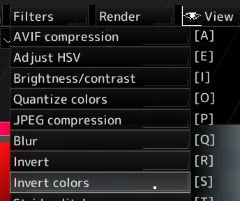
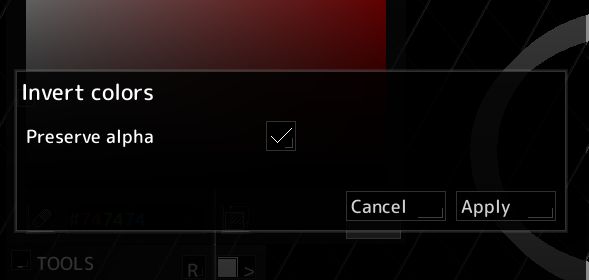

This page will guide you through creating a custom voidsprite filter in your plugin.
You will need to have a working setup for building a plugin as described on the Get started page.
You need to create a function that voidsprite will call when applying your filter.
This function must return void and take VSPLayer* and VSPFilter* as parameters.
In this example, we will create a filter that inverts the colors of the image.
void invertFilter(VSPLayer* layer, VSPFilter* filter) {
//This is where we will manipulate the layer's pixels
}
We will get the layer dimensions and iterate over all pixels to invert them.
We will then free the layer info pointer.
void invertFilter(VSPLayer* layer, VSPFilter* filter) {
VSPLayerInfo* info = vsp->layerGetInfo(layer);
//Iterate over every pixel
for (int y = 0; y < info->height; y++) {
for (int x = 0; x < info->width; x++) {
//Get the current pixel
uint32_t pixel = vsp->layerGetPixel(layer, x, y);
//Invert the color preserving the alpha channel
uint8_t alpha = (pixel >> 24) & 0xFF;
uint32_t invertedPixel = 0xFFFFFFFF - pixel;
invertedPixel = (alpha << 24) | (invertedPixel & 0xFFFFFF);
//Set the pixel
vsp->layerSetPixel(layer, x, y, invertedPixel);
}
}
vsp->util_free(info);
}layerGetRawPixelData function to manipulate the RGBA data directly,
layerGetPixel and layerSetPixel as they are less prone to error,
After writing your filter function, you need to register it with voidsprite.
This is done by calling registerFilter in your plugin's pluginInit function.
void pluginInit(voidspriteSDK* sdk) {
vsp = sdk;
//...
VSPFilter* filter = vsp->registerFilter("Invert colors", invertFilter);
//...
}Compile your plugin, install it, and your filter should now be available in voidsprite under the section on the navigation bar. 
The SDK allows you to add configurable parameters to your filter, which will be shown in the filter settings dialog when the user selects your filter.
In this example, we will add a parameter to control if alpha should be inverted as well.
To do this, we will use filterNewBoolParameter to add a boolean parameter to our filter.
void pluginInit(voidspriteSDK* sdk) {
vsp = sdk;
//...
VSPFilter* filter = vsp->registerFilter("Invert colors", invertFilter);
vsp->filterNewBoolParameter(filter, "Preserve alpha", true);
//...
}

To get the value of this parameter in our filter, we will use filterGetBoolValue.
void invertFilter(VSPLayer* layer, VSPFilter* filter) {
VSPLayerInfo* info = vsp->layerGetInfo(layer);
//Get the value of the "Preserve alpha" parameter
bool preserveAlpha = vsp->filterGetBoolValue(filter, "Preserve alpha");
//Iterate over every pixel
for (int y = 0; y < info->height; y++) {
for (int x = 0; x < info->width; x++) {
//Get the current pixel
uint32_t pixel = vsp->layerGetPixel(layer, x, y);
//Invert the color preserving the alpha channel if the parameter is set
uint8_t alpha = (pixel >> 24) & 0xFF;
uint32_t invertedPixel = 0xFFFFFFFF - pixel;
if (preserveAlpha) {
invertedPixel = (alpha << 24) | (invertedPixel & 0xFFFFFF);
}
//Set the pixel
vsp->layerSetPixel(layer, x, y, invertedPixel);
}
}
vsp->util_free(info);
}Rebuild your plugin, and your filter will now have a checkbox to preserve alpha, which should work as expected.